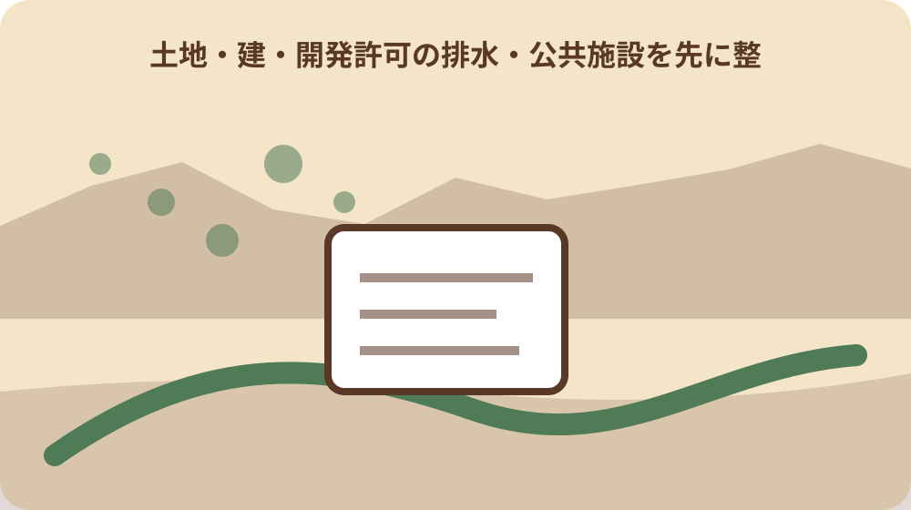
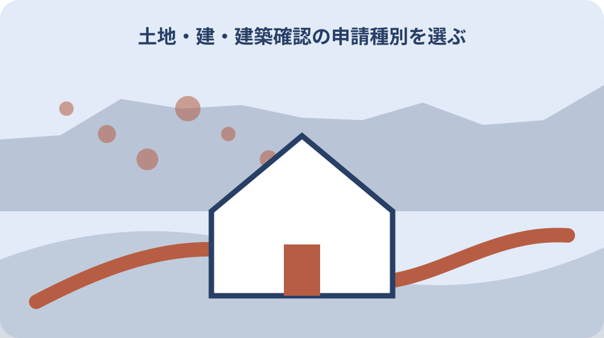

先に結論を確認する
この記事の答え：不要にはなりません。土地の開発行為と建物の確認は別の根拠・審査で、必要な双方を管理します。
森町で最初に照合する条件：土地の区画・形質変更と、建物の敷地・構造・設備を別図面で説明する。
土地の変更と建物の計画を二枚に分ける
開発許可は土地の区画形質、建築確認は建物の敷地・構造・設備を中心に扱う。土地の変更と建物の計画を二枚に分けるについて資料と現物を比べる際は、造成図と建築配置図を分けたうえで同じ計画番号を付け、土地変更と建物変更の影響を相互に追えるようにします。
造成平面図と建築配置図を分けると各窓口へ質問しやすい。土地の変更と建物の計画を二枚に分けるを家族へ引き継ぐ記録では、造成図と建築配置図を分けたうえで同じ計画番号を付け、土地変更と建物変更の影響を相互に追えるようにします。
切土盛土、道路、排水と、用途、階数、床面積を別表へ転記する。土地の変更と建物の計画を二枚に分けるについて担当先へ尋ねる前には、造成図と建築配置図を分けたうえで同じ計画番号を付け、土地変更と建物変更の影響を相互に追えるようにします。
建物が小さいことだけで土地側の手続を不要と判断しない。土地の変更と建物の計画を二枚に分けるで判断を急がないためには、造成図と建築配置図を分けたうえで同じ計画番号を付け、土地変更と建物変更の影響を相互に追えるようにします。
造成図と建築配置図を分けたうえで同じ計画番号を付け、土地変更と建物変更の影響を相互に追えるようにします。
根拠法と手続名を同じ行に置く
開発許可は都市計画法、建築確認は建築基準法に基づく。根拠法と手続名を同じ行に置くについて資料と現物を比べる際は、都市計画法、建築基準法、町要綱など根拠ごとに正式な手続名を記し、通称の『許可』で一括しません。
通称の造成申請や建築許可では正式な手続を取り違えやすい。根拠法と手続名を同じ行に置くを家族へ引き継ぐ記録では、都市計画法、建築基準法、町要綱など根拠ごとに正式な手続名を記し、通称の『許可』で一括しません。
正式名、根拠、申請先、受付番号、期限を一行で管理する。根拠法と手続名を同じ行に置くについて担当先へ尋ねる前には、都市計画法、建築基準法、町要綱など根拠ごとに正式な手続名を記し、通称の『許可』で一括しません。
許可、承認、届出、確認という語をすべて同じ完了状態にしない。根拠法と手続名を同じ行に置くで判断を急がないためには、都市計画法、建築基準法、町要綱など根拠ごとに正式な手続名を記し、通称の『許可』で一括しません。
都市計画法、建築基準法、町要綱など根拠ごとに正式な手続名を記し、通称の『許可』で一括しません。
森町の土地利用承認を第三列にする
森町には1000平方メートル以上の一団の土地を対象とする独自の承認手続がある。森町の土地利用承認を第三列にするについて資料と現物を比べる際は、町の土地利用承認列には区域面積と事前協議の状態を置き、県の開発許可列と混同しない表にします。
県の開発許可二列だけでは町への事前協議を取りこぼす可能性がある。森町の土地利用承認を第三列にするを家族へ引き継ぐ記録では、町の土地利用承認列には区域面積と事前協議の状態を置き、県の開発許可列と混同しない表にします。
町承認を独立列にし、事前協議と実施計画承認を分ける。森町の土地利用承認を第三列にするについて担当先へ尋ねる前には、町の土地利用承認列には区域面積と事前協議の状態を置き、県の開発許可列と混同しない表にします。
県許可の相談済みを町承認済みと記録しない。森町の土地利用承認を第三列にするで判断を急がないためには、町の土地利用承認列には区域面積と事前協議の状態を置き、県の開発許可列と混同しない表にします。
町の土地利用承認列には区域面積と事前協議の状態を置き、県の開発許可列と混同しない表にします。

立地適正化届出を30日前から逆算する
対象行為は着手30日前までの町長届出が必要と案内される。立地適正化届出を30日前から逆算するについて資料と現物を比べる際は、立地適正化の届出期限から設計確定日を逆算し、対象区域と行為の該当性を森町窓口へ確認します。
確認申請の提出日だけを工程基準にすると別届出が遅れる。立地適正化届出を30日前から逆算するを家族へ引き継ぐ記録では、立地適正化の届出期限から設計確定日を逆算し、対象区域と行為の該当性を森町窓口へ確認します。
着手予定日から30日前を表示し、区域と行為種別を確認する。立地適正化届出を30日前から逆算するについて担当先へ尋ねる前には、立地適正化の届出期限から設計確定日を逆算し、対象区域と行為の該当性を森町窓口へ確認します。
区域図上の概略だけで対象外と決めず地番で照会する。立地適正化届出を30日前から逆算するで判断を急がないためには、立地適正化の届出期限から設計確定日を逆算し、対象区域と行為の該当性を森町窓口へ確認します。
立地適正化の届出期限から設計確定日を逆算し、対象区域と行為の該当性を森町窓口へ確認します。
開発許可の排水・公共施設を先に整理する
県は公共施設や排水施設等の整備を開発許可制度の目的に挙げる。開発許可の排水・公共施設を先に整理するについて資料と現物を比べる際は、開発許可側の排水計画と公共施設協議を先に整理し、建築図だけを提出して土地側の課題を残しません。
土地所有だけでなく道路接続、雨水、汚水、擁壁を計画初期から示す必要がある。開発許可の排水・公共施設を先に整理するを家族へ引き継ぐ記録では、開発許可側の排水計画と公共施設協議を先に整理し、建築図だけを提出して土地側の課題を残しません。
流末、放流先、道路幅、工事範囲を現況写真と計画図へ結ぶ。開発許可の排水・公共施設を先に整理するについて担当先へ尋ねる前には、開発許可側の排水計画と公共施設協議を先に整理し、建築図だけを提出して土地側の課題を残しません。
建築設備の排水図だけで造成区域全体の排水確認を済ませない。開発許可の排水・公共施設を先に整理するで判断を急がないためには、開発許可側の排水計画と公共施設協議を先に整理し、建築図だけを提出して土地側の課題を残しません。
開発許可側の排水計画と公共施設協議を先に整理し、建築図だけを提出して土地側の課題を残しません。
建築確認の申請種別を選ぶ
県は確認、計画変更、中間検査、完了検査等を別々に示している。建築確認の申請種別を選ぶについて資料と現物を比べる際は、建築確認では用途、規模、構造による申請種別を確認し、小規模という印象だけで不要と決めません。
確認済証を得た後も工事段階に応じた検査や変更手続が続く。建築確認の申請種別を選ぶを家族へ引き継ぐ記録では、建築確認では用途、規模、構造による申請種別を確認し、小規模という印象だけで不要と決めません。
建築士と申請予定日、検査時期、変更判断者を表にする。建築確認の申請種別を選ぶについて担当先へ尋ねる前には、建築確認では用途、規模、構造による申請種別を確認し、小規模という印象だけで不要と決めません。
最初の確認受付を建物手続すべての完了としない。建築確認の申請種別を選ぶで判断を急がないためには、建築確認では用途、規模、構造による申請種別を確認し、小規模という印象だけで不要と決めません。
建築確認では用途、規模、構造による申請種別を確認し、小規模という印象だけで不要と決めません。
申請先を所在地と規模で確認する
県案内は建築予定地を所管する土木事務所または県担当課を申請先とする。申請先を所在地と規模で確認するについて資料と現物を比べる際は、申請先は所在地と建築物の条件で確認し、県窓口と指定確認検査機関のどちらへ出したかを記録します。
民間指定確認検査機関を使う場合も関係行政窓口との照会が生じ得る。申請先を所在地と規模で確認するを家族へ引き継ぐ記録では、申請先は所在地と建築物の条件で確認し、県窓口と指定確認検査機関のどちらへ出したかを記録します。
森町の所在地、建物用途、規模、申請方式を伝えて所管を確認する。申請先を所在地と規模で確認するについて担当先へ尋ねる前には、申請先は所在地と建築物の条件で確認し、県窓口と指定確認検査機関のどちらへ出したかを記録します。
以前の別物件と同じ提出先だと推定しない。申請先を所在地と規模で確認するで判断を急がないためには、申請先は所在地と建築物の条件で確認し、県窓口と指定確認検査機関のどちらへ出したかを記録します。
申請先は所在地と建築物の条件で確認し、県窓口と指定確認検査機関のどちらへ出したかを記録します。
電子申請と書面申請を版管理する
県は電子申請を開始した一方で書面申請も継続可能としている。電子申請と書面申請を版管理するについて資料と現物を比べる際は、電子データと紙図面には同じ改訂番号を付け、補正前後の図面を混在させず、提出版を特定します。
同じ図面を電子と紙で更新すると最新版が二系統になりやすい。電子申請と書面申請を版管理するを家族へ引き継ぐ記録では、電子データと紙図面には同じ改訂番号を付け、補正前後の図面を混在させず、提出版を特定します。
ファイル名、版、提出媒体、送信日、受領通知を索引化する。電子申請と書面申請を版管理するについて担当先へ尋ねる前には、電子データと紙図面には同じ改訂番号を付け、補正前後の図面を混在させず、提出版を特定します。
差替え前の紙図面を現場の施工図として残さない。電子申請と書面申請を版管理するで判断を急がないためには、電子データと紙図面には同じ改訂番号を付け、補正前後の図面を混在させず、提出版を特定します。
電子データと紙図面には同じ改訂番号を付け、補正前後の図面を混在させず、提出版を特定します。
変更時は四つの手続へ影響を確認する
面積、用途、配置、排水、着手日の変更は複数手続へ波及する可能性がある。変更時は四つの手続へ影響を確認するについて資料と現物を比べる際は、区域、用途、規模、排水の変更が四手続のどれへ影響するか、変更着手前に各担当へ照会します。
建築確認の変更だけで町承認や開発許可の変更が不要とは限らない。変更時は四つの手続へ影響を確認するを家族へ引き継ぐ記録では、区域、用途、規模、排水の変更が四手続のどれへ影響するか、変更着手前に各担当へ照会します。
変更一覧を各窓口へ同じ版で示し、必要・不要の回答を別々に取る。変更時は四つの手続へ影響を確認するについて担当先へ尋ねる前には、区域、用途、規模、排水の変更が四手続のどれへ影響するか、変更着手前に各担当へ照会します。
一窓口の不要回答を他制度へ自動で広げない。変更時は四つの手続へ影響を確認するで判断を急がないためには、区域、用途、規模、排水の変更が四手続のどれへ影響するか、変更着手前に各担当へ照会します。
区域、用途、規模、排水の変更が四手続のどれへ影響するか、変更着手前に各担当へ照会します。

受付番号と完了書類を混ぜない
受付票、許可書、承認通知、確認済証、検査済証は段階と名称が異なる。受付番号と完了書類を混ぜないについて資料と現物を比べる際は、受付番号は審査開始の識別子であり、許可書や確認済証、検査済証と同じ完了証明として扱いません。
家族が番号だけを見ても何が終わったか分かる索引が必要である。受付番号と完了書類を混ぜないを家族へ引き継ぐ記録では、受付番号は審査開始の識別子であり、許可書や確認済証、検査済証と同じ完了証明として扱いません。
書類名、発行者、日付、対象図面版、次工程を一組にする。受付番号と完了書類を混ぜないについて担当先へ尋ねる前には、受付番号は審査開始の識別子であり、許可書や確認済証、検査済証と同じ完了証明として扱いません。
受付番号の付与を審査合格と説明しない。受付番号と完了書類を混ぜないで判断を急がないためには、受付番号は審査開始の識別子であり、許可書や確認済証、検査済証と同じ完了証明として扱いません。
受付番号は審査開始の識別子であり、許可書や確認済証、検査済証と同じ完了証明として扱いません。
着工可否を一枚のゲート表で確認する
工事契約日と行政上の着手可能日は同じではない。着工可否を一枚のゲート表で確認するについて資料と現物を比べる際は、着工ゲート表には各手続の必要・不要根拠と完了書類を置き、口頭相談だけで可へ切り替えません。
必要な許可、承認、届出期間、確認済証を施工者と共有する。着工可否を一枚のゲート表で確認するを家族へ引き継ぐ記録では、着工ゲート表には各手続の必要・不要根拠と完了書類を置き、口頭相談だけで可へ切り替えません。
未完了欄が一つでもあれば誰がいつ確認するかを決める。着工可否を一枚のゲート表で確認するについて担当先へ尋ねる前には、着工ゲート表には各手続の必要・不要根拠と完了書類を置き、口頭相談だけで可へ切り替えません。
施工者の予定だけで行政手続完了を推定しない。着工可否を一枚のゲート表で確認するで判断を急がないためには、着工ゲート表には各手続の必要・不要根拠と完了書類を置き、口頭相談だけで可へ切り替えません。
着工ゲート表には各手続の必要・不要根拠と完了書類を置き、口頭相談だけで可へ切り替えません。
大石の視点：窓口の数を減らそうとしない
各制度の根拠、期限、申請種別は公的資料で確認できる事実である。大石の視点：窓口の数を減らそうとしないについて資料と現物を比べる際は、窓口を一つにまとめない方が安全だという私見と、各法令・要綱の公的な所管区分は明確に分けます。
私は窓口を一つにまとめるより同じ計画図を各窓口がどう見たか残す方が安全だと考える。大石の視点：窓口の数を減らそうとしないを家族へ引き継ぐ記録では、窓口を一つにまとめない方が安全だという私見と、各法令・要綱の公的な所管区分は明確に分けます。
売却前の土地でも許可履歴と確認済証を分ければ買主へ説明しやすい。大石の視点：窓口の数を減らそうとしないについて担当先へ尋ねる前には、窓口を一つにまとめない方が安全だという私見と、各法令・要綱の公的な所管区分は明確に分けます。
これは私見であり、手続要否と着工可否は所管機関の回答で確定する。大石の視点：窓口の数を減らそうとしないで判断を急がないためには、窓口を一つにまとめない方が安全だという私見と、各法令・要綱の公的な所管区分は明確に分けます。
窓口を一つにまとめない方が安全だという私見と、各法令・要綱の公的な所管区分は明確に分けます。